About Me
I am a research scientist at Cargenie Mellon University (CMU) and MBZUAI. I currently co-lead the Causal Learning and Reasoning (CLeaR) Group with Prof. Kun Zhang . Prior to that, I received both my Ph.D. and B.S. degrees from Tsinghua University, advised by Prof. Jie Zhou and Prof. Jiwen Lu . My research interests include causality, representation learning, and computer vision. A central focus of my current work is to develop principled and practical methods for learning meaningful visual representations that support recognization, understanding, generation, and reasoning.
I’m currently on the academic job market! If you’re interested in my research and believe I could be a strong addition to your department, I’d be glad to connect. Please don’t hesitate to reach out by dropping me an e-mail guangyichen1994(at)gmail.com .
News
Research Topics
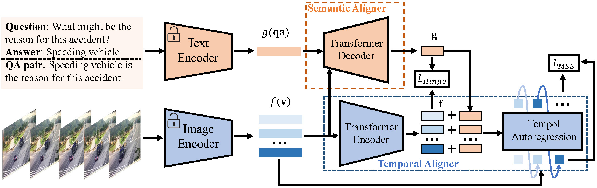
Tem-adapter: Adapting Image-Text Pretraining for Video Question Answer
We present Tem-Adapter, a method for video question answering that leverages image-based knowledge and introduces temporal and semantic alignment.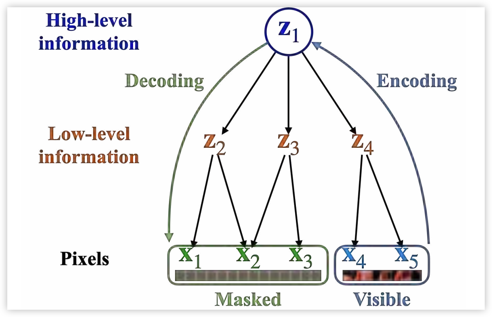
Understanding Masked Autoencoders via Hierarchical Latent Variable Models
We provide a causal perspective on masked autoencoders and analyze how latent variables can be identified in hierarchical generative models.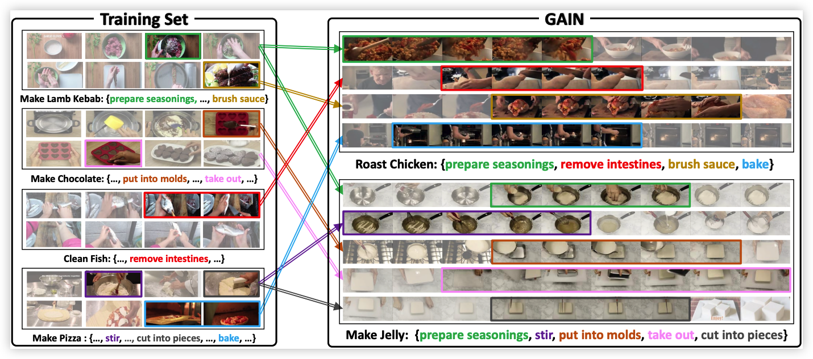
GAIN: On the Generalization of Instructional Action Understanding
We introduce GAIN, a benchmark for analyzing the generalization ability of instructional action understanding models.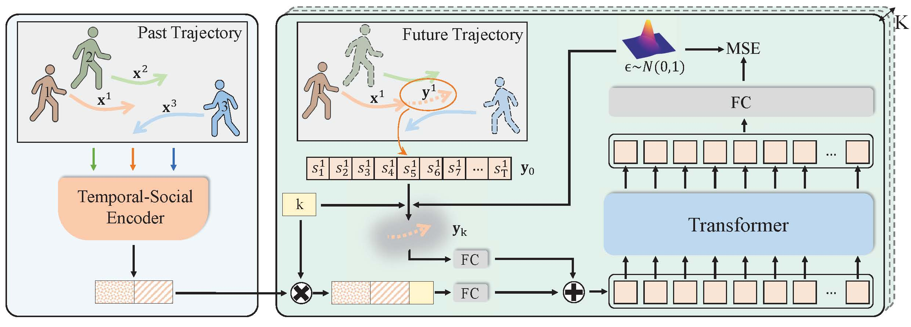
Stochastic Trajectory Prediction via Motion Indeterminacy Diffusion
We formulate trajectory prediction as the reverse process of motion indeterminacy diffusion and develop a generative framework for stochastic forecasting.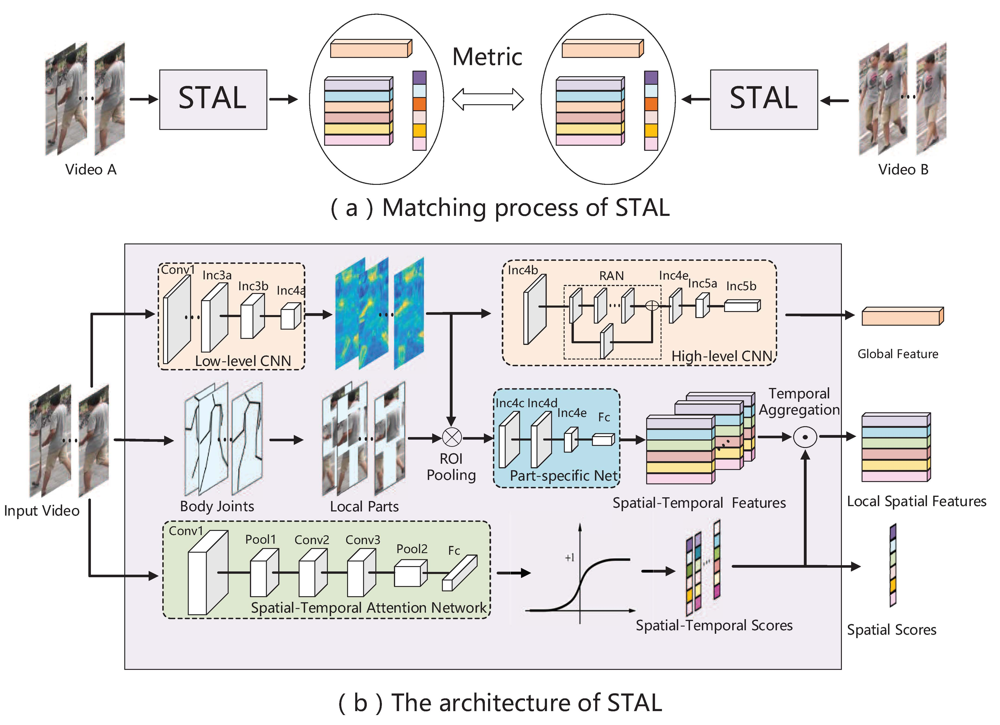
Spatial-Temporal Attention-aware Learning for Video-based Person Re-identification
We develop a spatial-temporal attention framework to discover salient visual clues across both spatial and temporal dimensions.
Probabilistic Temporal Modeling for Unintentional Action Localization
We propose a probabilistic framework with dense temporal predictions to model annotation uncertainty in unintentional action localization.
Unintentional Action Localization via Counterfactual Examples
We disentangle content and intention effects by constructing counterfactual video examples and learning hidden causal processes contrastively.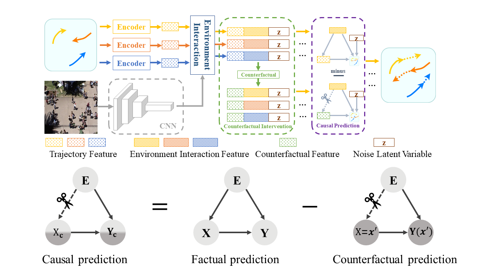
Human Trajectory Prediction via Counterfactual Analysis
We propose a counterfactual framework for human trajectory prediction to investigate causal effects and mitigate environmental bias.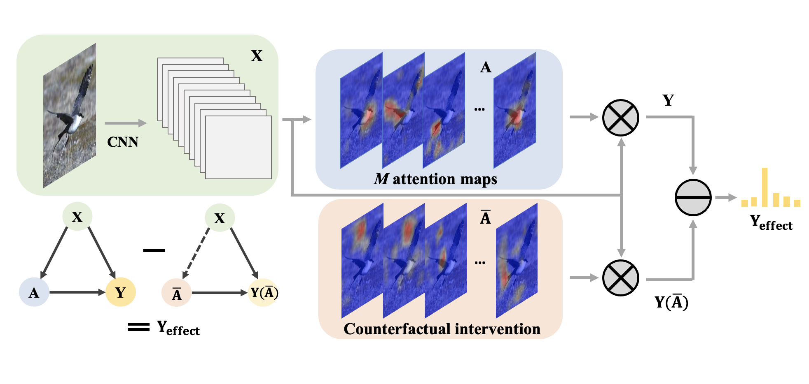
Counterfactual Attention Learning for Fine-Grained Visual Categorization and Re-identification
We propose a counterfactual attention learning framework that evaluates attention quality and provides an effective supervisory signal for representation learning.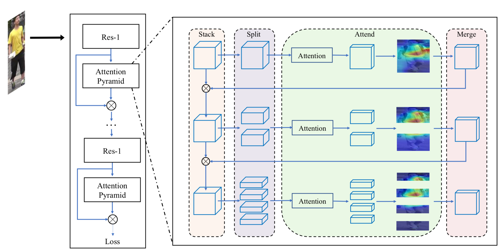
Person Re-identification via Attention Pyramid
We propose attention pyramid networks based on a split-attend-merge-stack design to learn multi-scale attention-based representations.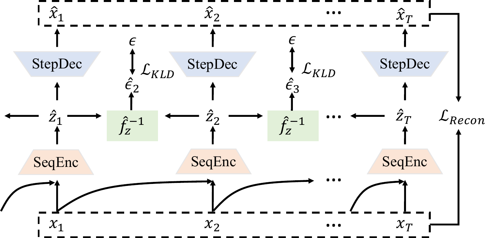
CaRiNG: Learning Temporal Causal Representation under Non-Invertible Generation Process
We propose CaRiNG to learn temporal causal representations under non-invertible generation processes, enabling more identifiable and structured representation learning from sequential observations.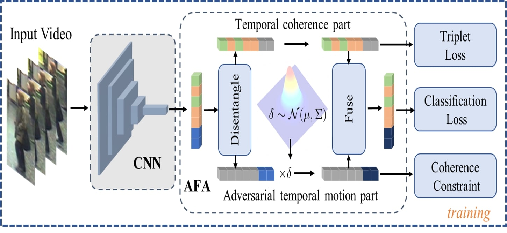
Temporal Coherence or Temporal Motion: Which is More Critical for Video-based Person Re-identification?
We show that temporal coherence is more critical than temporal motion for video-based person re-identification and introduce adversarial feature augmentation to emphasize it.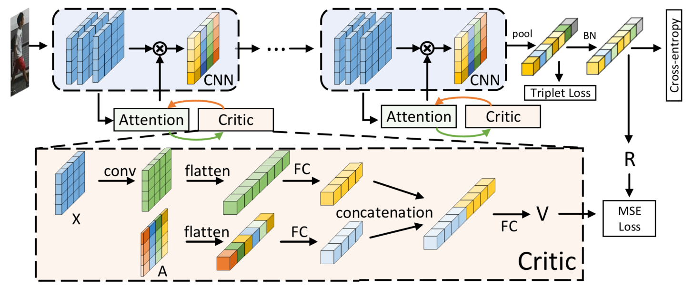
Self-Critical Attention Learning for Person Re-Identification
We present a self-critical attention learning method in which a critic module examines and supervises attention-based representation learning.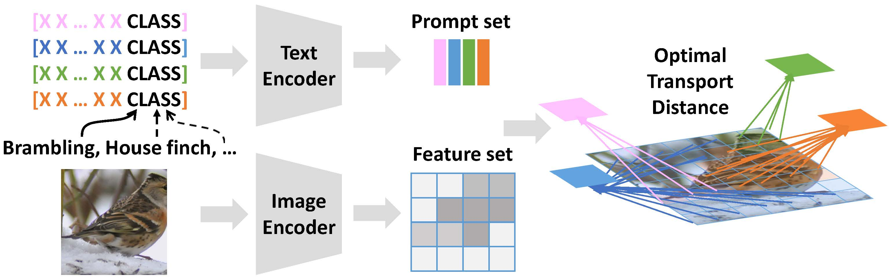
Prompt Learning with Optimal Transport for Vision-Language Models
We learn multiple comprehensive prompts with optimal transport to better adapt pretrained vision-language models.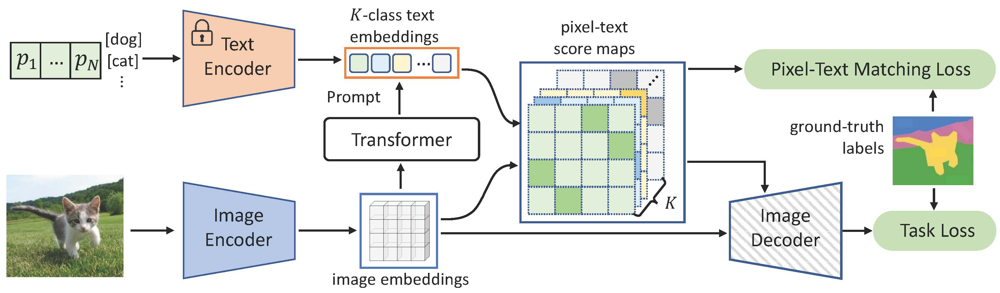
DenseCLIP: Language-Guided Dense Prediction with Context-Aware Prompting
DenseCLIP adapts pretrained CLIP knowledge, both implicitly and explicitly, for dense prediction tasks.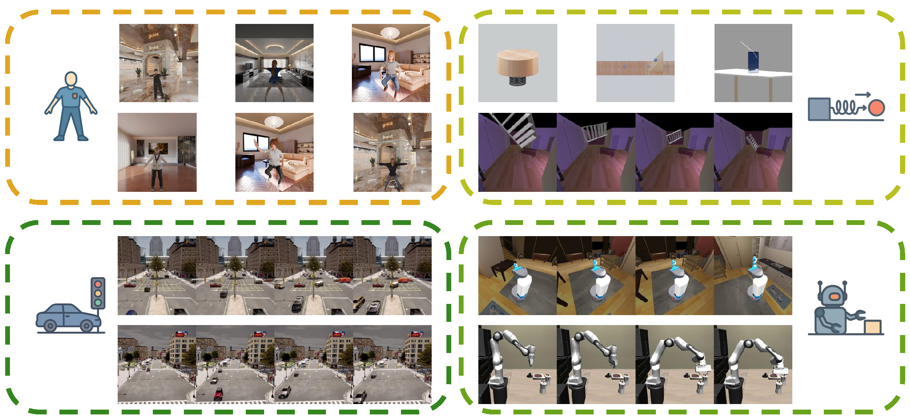
CausalVerse: A Comprehensive Benchmark for Causal Representation Learning with Controllable High-Fidelity Simulations
CausalVerse provides a comprehensive benchmark for causal representation learning with controllable, high-fidelity simulations enabling systematic evaluation.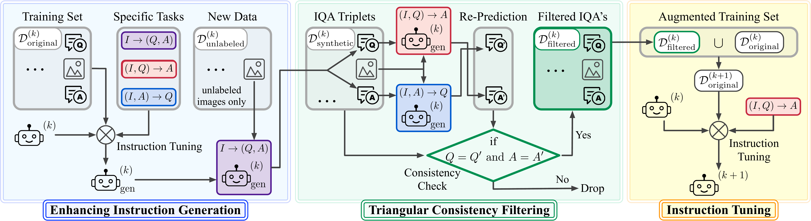
Towards Self-Refinement of Vision-Language Models with Triangular Consistency
We propose a self-refinement framework for vision-language models that improves instruction tuning through synthetic generation and triangular consistency filtering.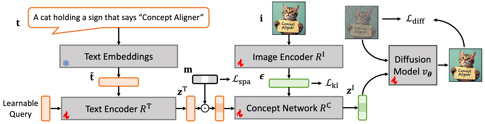
Learning Vision and Language Concepts for Controllable Image Generation
We study how to learn vision and language concepts for controllable image generation, enabling more interpretable and flexible control over generated visual content.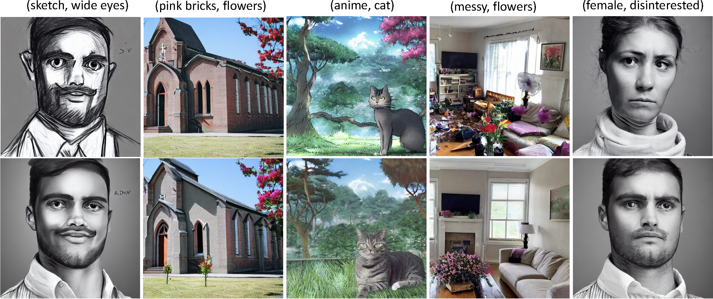
Learning Discrete Concepts in Latent Hierarchical Models
We study discrete concept learning in latent hierarchical models, providing a structured framework for controllable and interpretable generation.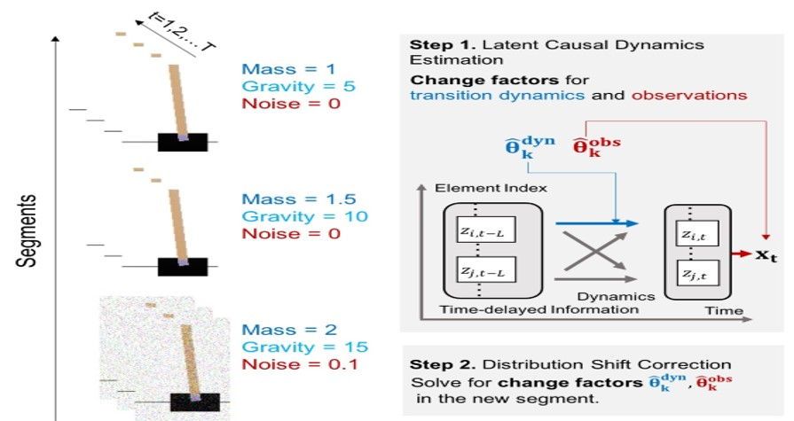
Temporally Disentangled Representation Learning
We propose a framework to recover time-delayed latent causal variables and identify their relations from sequential data under stationary environments and distribution shifts.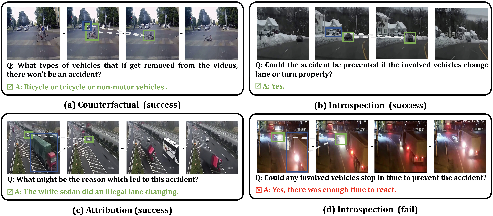
LLCP: Learning Latent Causal Processes for Reasoning-based Video Question Answering
We propose LLCP to learn latent causal processes for reasoning-based video question answering, enabling more structured temporal understanding and causal reasoning in videos.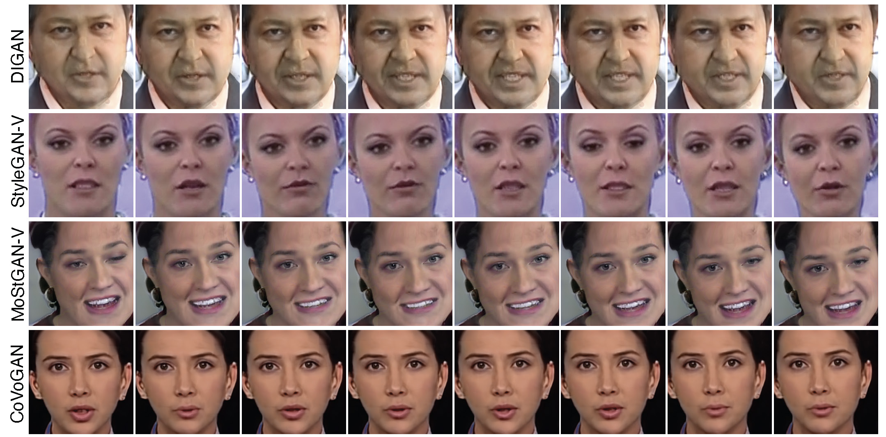
Controllable Video Generation with Provable Disentanglement
We study controllable video generation with provable disentanglement, enabling more interpretable control over dynamic visual content.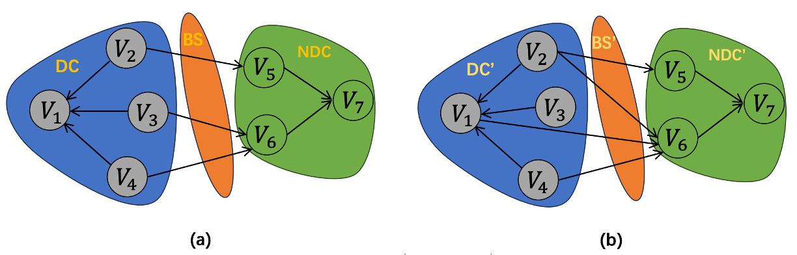
On Causal Discovery in the Presence of Deterministic Relations
We study causal discovery in the presence of deterministic relations and develop a principled framework for identifying causal structure under such dependencies.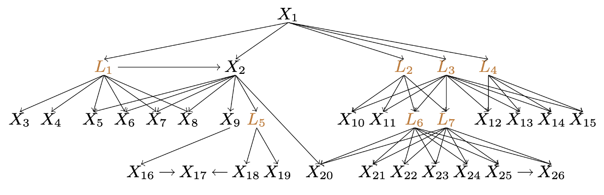
Structural Estimation of Partially Observed Linear Non-Gaussian Acyclic Model: A Practical Approach with Identifiability
We propose a practical and identifiable approach for structural estimation in partially observed linear non-Gaussian acyclic models.Publications
Selected papers are shown by default. Please see Google Scholar for the complete publication list.
- Yunlong Deng, Boyang Sun, Yan Li, Zeyu Tang, Lingjing Kong, Kun Zhang, Guangyi Chen, Selection, Reflection and Self-Refinement: Revisit Reasoning Tasks via a Causal Lens, International Conference on Learning Representations (ICLR), 2026. [Code]
- Guangyi Chen*, Yunlong Deng*, Peiyuan Zhu*, Yan Li*, Yifan Shen, Zijian Li, Kun Zhang, CausalVerse: A Comprehensive Benchmark for Causal Representation Learning with Controllable High-Fidelity Simulations, Thirty-eighth Conference on Neural Information Processing Systems (NeurIPS), 2025, Spotlight. [Project Page] [Datasets] [Code]
- Yunlong Deng*, Guangyi Chen*, Tianpei Gu, Lingjing Kong, Yan Li, Zeyu Tang, Kun Zhang, Towards Self-Refinement of Vision-Language Models with Triangular Consistency, Thirty-eighth Conference on Neural Information Processing Systems (NeurIPS), 2025. [Code]
- Shaoan Xie*, Lingjing Kong*, Yujia Zheng, Zeyu Tang, Eric P. Xing, Guangyi Chen, Kun Zhang, Learning Vision and Language Concepts for Controllable Image Generation, International Conference on Machine Learning (ICML), 2025.
- Shaoan Xie*, Lingjing Kong*, Yujia Zheng, Yu Yao, Zeyu Tang, Eric P. Xing, Guangyi Chen, Kun Zhang, SmartCLIP: Modular Vision-Language Alignment with Identification Guarantees, IEEE/CVF Conference on Computer Vision and Pattern Recognition (CVPR), 2025, Highlight.
- Zijian Li*, Yifan Shen*, Kaitao Zheng, Ruichu Cai, Xiangchen Song, Mingming Gong, Guangyi Chen, Kun Zhang, On the Identification of Temporal Causal Representation with Instantaneous Dependence, The Thirteenth International Conference on Learning Representations (ICLR), 2025, Oral.
- Zijian Li, Zunhong Xu, Ruichu Cai, Zhenhui Yang, Yuguang Yan, Zhifeng Hao, Guangyi Chen, Kun Zhang, Identifying Semantic Component for Robust Molecular Property Prediction, IEEE Transactions on Pattern Analysis and Machine Intelligence (TPAMI), 2025.
- Lingjing Kong*, Guangyi Chen*, Petar Stojanov, Haoxuan Li, Eric P. Xing, Kun Zhang, Towards Understanding Extrapolation: a Causal Lens, Thirty-eighth Conference on Neural Information Processing Systems (NeurIPS), 2024. [Code]
- Guangyi Chen*, Yifan Shen*, Zhenhao Chen*, Xiangchen Song, Yuewen Sun, Weiran Yao, Xiao Liu, Kun Zhang, CaRiNG: Learning Temporal Causal Representation under Non-Invertible Generation Process, International Conference on Machine Learning (ICML), 2024. [Code]
- Yuke Li*, Guangyi Chen*, Ben Abramowitz, Stefano Anzellott, Donglai Wei, Learning Domain-Invariant Causal Temporal Dynamics for Few-Shot Action Recognition, International Conference on Machine Learning (ICML), 2024.
- Sheng Zhang, Muzammal Naseer, Guangyi Chen, Zhiqiang Shen, Salman Khan, Kun Zhang, Fahad Khan, Towards Realistic Zero-Shot Classification via Self Structural Semantic Alignment, Thirty-Eighth AAAI Conference on Artificial Intelligence (AAAI), 2024, Oral. [Code]
- Guangyi Chen*, Yuke Li*, Xiao Liu, Zijian Li, Eman Al Suradi, Donglai Wei, Kun Zhang, LLCP: Learning Latent Causal Processes for Reasoning-based Video Question Answer, The Twelfth International Conference on Learning Representations (ICLR), 2024. [Code]
- Zijian Li, Ruichu Cai, Guangyi Chen, Boyang Sun, Zhifeng Hao, Kun Zhang, Subspace Identification for Multi-Source Domain Adaptation, Thirty-seventh Conference on Neural Information Processing Systems (NeurIPS), 2023, Spotlight. [Code]
- Guangyi Chen*, Xiao Liu*, Guangrun Wang, Kun Zhang, Philip H.S. Torr, Xiao-Ping Zhang, Yansong Tang, Tem-adapter: Adapting Image-Text Pretraining for Video Question Answer, IEEE International Conference on Computer Vision (ICCV), 2023. [Code]
- Guangyi Chen*, Zhenhao Chen*, Shunxing Fan, Kun Zhang, Unsupervised Sampling Promoting for Stochastic Human Trajectory Prediction, IEEE/CVF Conference on Computer Vision and Pattern Recognition (CVPR), 2023. [Code]
- Lingjing Kong, Martin Q. Ma, Guangyi Chen, Eric P. Xing, Yuejie Chi, Louis-Philippe Morency, Kun Zhang, Understanding Masked Autoencoders via Hierarchical Latent Variable Models, IEEE/CVF Conference on Computer Vision and Pattern Recognition (CVPR), 2023, Highlight.
- Guangyi Chen, Weiran Yao, Xiangchen Song, Xinyue Li, Yongming Rao, Kun Zhang, PLOT: Prompt Learning with Optimal Transport for Vision-Language Models, The Eleventh International Conference on Learning Representations (ICLR), 2023, Spotlight. [Code]
- Qiaosong Chu, Shuyan Li, Guangyi Chen, Kai Li, Xiu Li, Adversarial Alignment for Source Free Object Detection, Thirty-Seventh AAAI Conference on Artificial Intelligence (AAAI), 2023, Oral. [Code]
- Tianpei Gu*, Guangyi Chen*, Junlong Li, Chunze Lin, Yongming Rao, Jie Zhou, Jiwen Lu, Stochastic Trajectory Prediction via Motion Indeterminacy Diffusion, IEEE/CVF Conference on Computer Vision and Pattern Recognition (CVPR), 2022. [Code]
- Yongming Rao, Wenliang Zhao, Guangyi Chen, Yansong Tang, Zheng Zhu, Guan Huang, Jie Zhou, Jiwen Lu, DenseCLIP: Language-Guided Dense Prediction with Context-Aware Prompting, IEEE/CVF Conference on Computer Vision and Pattern Recognition (CVPR), 2022. [Code] [Project]
- Weiran Yao, Guangyi Chen, Kun Zhang, Temporally Disentangled Representation Learning, Thirty-sixth Conference on Neural Information Processing Systems (NeurIPS), 2022. [Code]
- Jinglin Xu*, Guangyi Chen*, Jiwen Lu, Jie Zhou, Probabilistic Temporal Modeling for Unintentional Action Localization, IEEE Transactions on Image Processing (TIP), 2022.
- Jinglin Xu*, Guangyi Chen*, Jiwen Lu, Jie Zhou, Unintentional Action Localization via Counterfactual Examples, IEEE Transactions on Image Processing (TIP), 2022.
- Guangyi Chen, Junlong Li, Nuoxing Zhou, Liangliang Ren, Jiwen Lu, Personalized Trajectory Prediction via Distribution Discrimination, IEEE International Conference on Computer Vision (ICCV), 2021. [Code]
- Guangyi Chen, Junlong Li, Jiwen Lu, Jie Zhou, Human Trajectory Prediction via Counterfactual Analysis, IEEE International Conference on Computer Vision (ICCV), 2021. [Code]
- Yongming Rao*, Guangyi Chen*, Jiwen Lu, Jie Zhou, Counterfactual Attention Learning for Visual Recognition, IEEE International Conference on Computer Vision (ICCV), 2021. [Code]
- Guangyi Chen, Yuhao Lu, Jiwen Lu, Jie Zhou, Deep Credible Metric Learning for Unsupervised Domain Adaptation Person Re-identification, Proceedings of the European Conference on Computer Vision (ECCV), 2020.
- Guangyi Chen*, Yongming Rao*, Jiwen Lu, Jie Zhou, Temporal Coherence or Temporal Motion: Which is More Critical for Video-based Person Re-identification?, Proceedings of the European Conference on Computer Vision (ECCV), 2020.
- Guangyi Chen, Tianpei Gu, Jiwen Lu, Jin-An Bao, Jie Zhou, Person Re-identification via Attention Pyramid, IEEE Transactions on Image Processing (TIP), 2020. [Code]
- Guangyi Chen, Jiwen Lu, Ming Yang, Jie Zhou, Learning Recurrent 3D Attention for Video-based Person Re-identification, IEEE Transactions on Image Processing (TIP), 2020.
- Guangyi Chen, Tianren Zhang, Jiwen Lu, Jie Zhou, Deep Meta Metric Learning, IEEE International Conference on Computer Vision (ICCV), 2019. [Code]
- Guangyi Chen, Chunze Lin, Liangliang Ren, Jiwen Lu, Jie Zhou, Self-Critical Attention Learning for Person Re-identification, IEEE International Conference on Computer Vision (ICCV), 2019.
- Guangyi Chen, Jiwen Lu, Ming Yang, Jie Zhou, Spatial-Temporal Attention-aware Learning for Video-based Person Re-identification, IEEE Transactions on Image Processing (TIP), 2019, Featured Article.
Honors and Awards
Teaching
Academic Services
- The Toturial on Structured Representation Learning for LLMs at AAAI 2026 – [Website]
- The Workshop on Causal Representation Learning at NeurIPS 2024 – [Website]
- The Workshop on Causal Representation Learning at ICDM 2024 – [Website]
- The Third Workshop on Human Identification in Multimedia at ICME 2019 – [Website]